Crédit : @darengd sur Unsplash
Algorithme génétique : évolution d'un champ de maïs
Publié en novembre 2021.
Introduction
On suppose que l'on étudie un champ de maïs. On considère chaque épi de maïs séparement, en les considérant comme des invidus indépendants. L'ensemble des épis constitue une population. La performance d'un individu (un épi de maïs) peut être mesurée comme une fraction du rendement maximal (fixé).Le principe est le suivant : on part avec une population de N individus, N étant lié à la taille du champ. Initialement, les rendements des épis sont pris au hasard. Chaque année A, une sélection empirique a lieu. D'abord, on identifie une partie des meilleurs individus (ceux qui ont le meilleur rendement) pour planter de nouveau leurs graines l'année suivante. Ensuite, pour introduire volontairement de la diversité génétique dans le champ, on fait de même avec une partie des individus les moins performants. À ce stade, nous disposons de N' < N individus pour peupler le champ l'année A+1.
L'idée est alors de croiser les individus retenus pour obtenir des épis de maïs hybrides, qui seront présents dans le champ l'année suivante (de telle sorte que l'on conserve la taille de la population dans le temps).
Pour pimenter les choses, on supposera également que les épis de maïs peuvent "muter" : le rendement d'un épi peut varier d'une année à l'autre avec une probabilité p, p << 1.
Le code (main.py)
Voyons maintenant le code associé.4 fonctions principales permettent de réaliser des simulations. D'abord, une fonction individual crée un individu en lui associant un rendement : 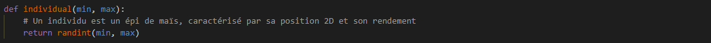
Ensuite, une autre fonction population crée le champ de maïs : 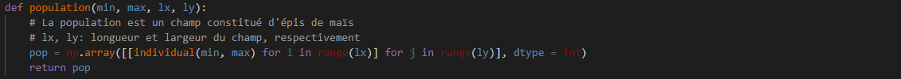
Il faut également définir une fonction grade permettant d'associer un score au champ une année donnée : 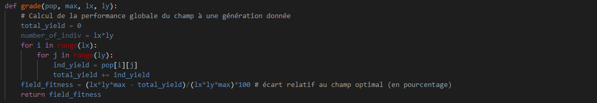
Et enfin, la fonction principale, evolve, permet de construire les générations dans le champ de maïs (elle sera appelée chaque année) : 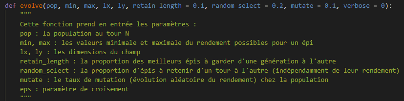
La fonction est séparée en plusieurs parties. Premièrement, on se charge de sélectionner les individus et de les faire muter au hasard : 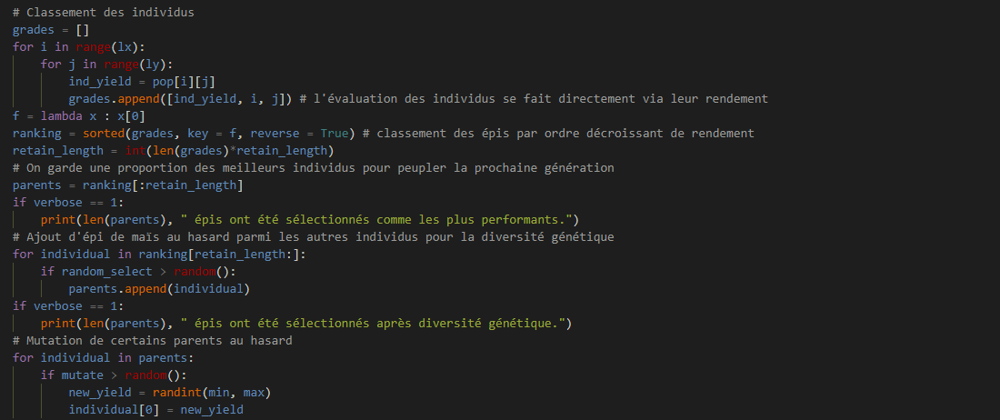
Puis on les croise pour créer des enfants qui vont peupler le champ l'année A+1 : 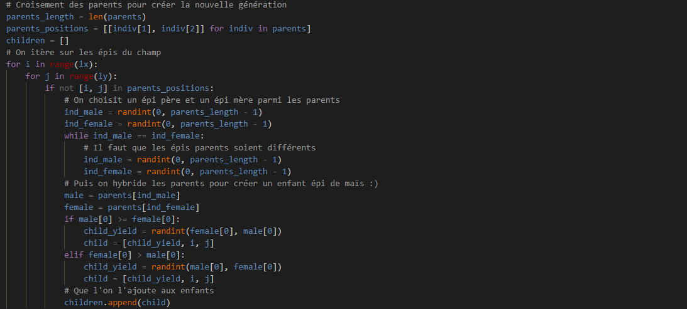
Et on construit la nouvelle génération : 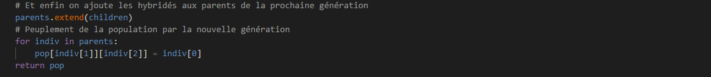
La simulation
On choisit de prendre les rendements des épis entre 1 et 10 (unité arbitraire). On se donne un champ de 100 par 100 (donc 10 000 épis) et de l'étudier sur 100 générations.Un second fichier test.py permet de visualiser l'évolution du champ sous forme de heatmap du rendement. Voici quelques extraits d'une simulation (plus le vert est foncé, meilleur est le rendement) :
Répartition initiale : 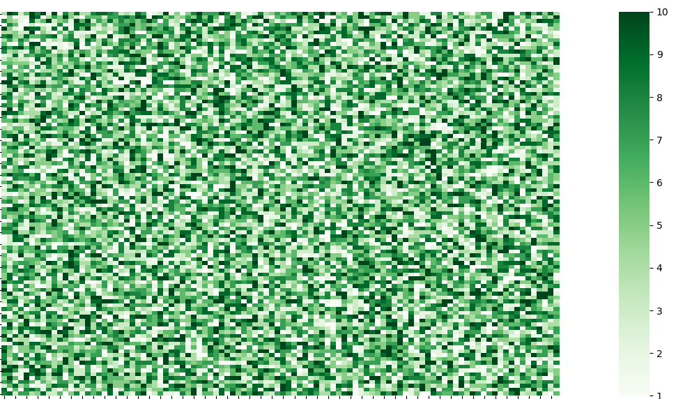
Après 1 sélection : 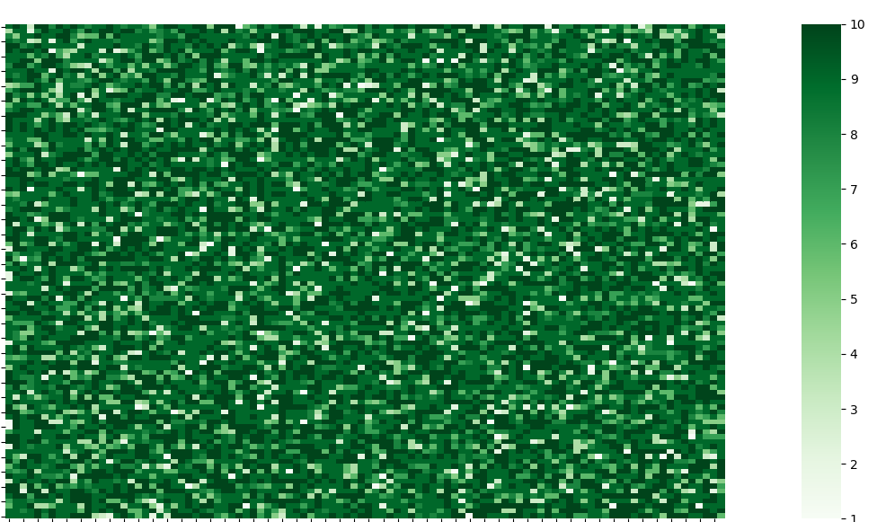
Après 2 sélections : 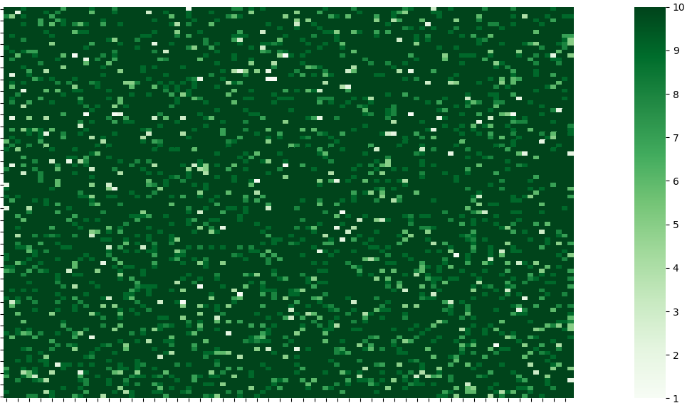
Après 10 sélections : 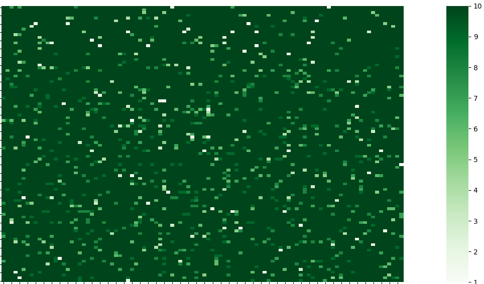
Après 20 sélections : 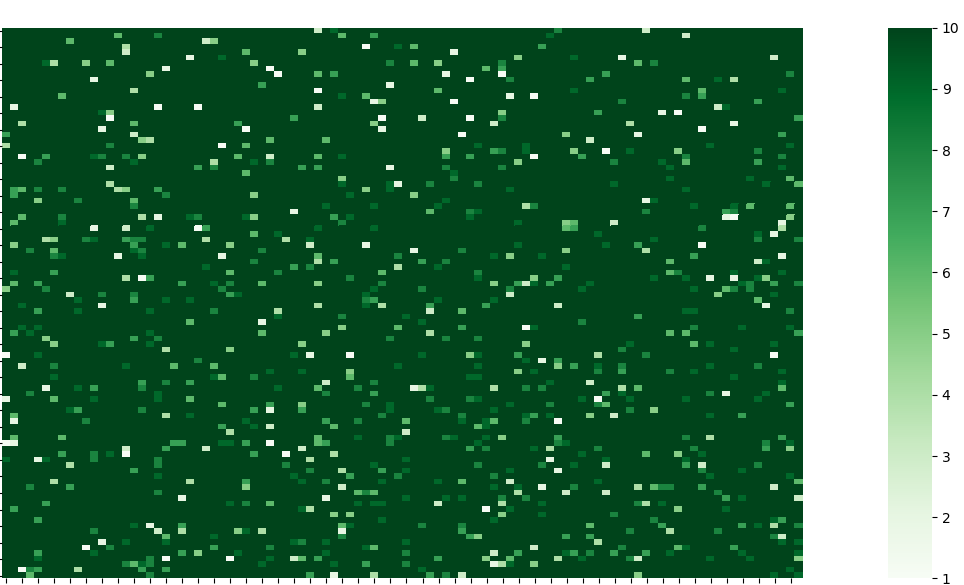
Que remarquer ? D'abord, la répartition initiale semble effectivement aléatoire, on y voit des rendements faibles (clairs) et forts (vert foncé). Le champ est donc initialement "naturel", c'est-à-dire qu'aucune sélection de performance n'a eu lieu. Après la 1ère sélection, le champ apparaît beaucoup plus foncé. Son rendement est donc, en moyenne, meilleur. D'une façon générale, le rendement moyen est croissant avec le temps (donc la sélection fonctionne !).
Ensuite, on remarque que, de la figure 1 à la 2, certains épis avec un excellent rendement sont gardés. Voir par exemple le 2ème épi de la 1ère ligne. Cela illustre le principe de sélection des meilleurs individus.
Dès la 2ème sélection (tour 3 de l'itération), le champ possède un très bon rendement moyen. Certaines zones blanches demeurent, représentant le principe de diversité génétique (certains individus peu performants sont gardés).
Dès le tour 11, un régime permanent semble s'installer. En effet, en comparant le tour 11 au 21ème (après 20 sélections), on s'aperçoit que le champ évolue peu. Localement toutefois, certaines zones spatiales voient leur rendement modifié : cela illustre la partie "mutation" des épis : certaines zones performantes peuvent, d'un tour à l'autre, être déstabilisées par le changement brutal du rendement d'un épi muté.
Ce sont ces mutations qui expliquent que le champ, au fil du temps, ne converge pas vers le champ "parfait" (et que son rendement moyen ne converge pas vers le maximum atteignable, 10 ici).
Un autre effet lié aux mutations entre également en jeu : la mutation ayant lieu après la sélection des parents d'une année A, les épis mutés jouent un grand rôle dans le peuplement de l'année A+1. Ce phénomène explique par exemple en partie les zones de rendement moyen : un des parents est un épi muté et l'autre un individu performant au rendement parfait. Cependant, d'autres explications sont possibles : un individu muté du tour d'avant est gardé par diversité génétique et peut aussi être croisé, ou un individu du tour d'avant a subi une mutation diminuant son rendement d'un haut niveau vers un niveau moyen.
Pour conclure et illustrer ces remarques, on trace l'évolution de l'écart du rendement moyen du champ au rendement idéal (cas où tous les épis ont un rendement de 10) au fil du temps : 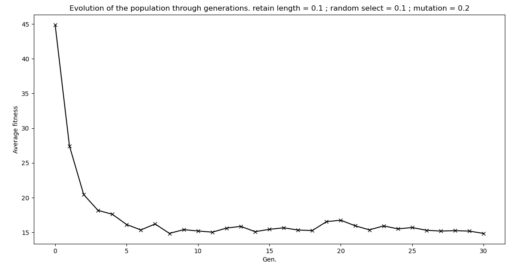
On observe une convergence vers la valeur en régime permanent à partir d'environ 10 générations (ce qui est cohérent avec nos remarques).
On relève également que le champ ne converge pas vers la configuration de rendement idéal (ici, 15% d'écart en régime permanent). Cela est directement en lien avec les remarques ci-dessus à propos des mutations et de la diversité génétique.
Enfin, on lit un écart initial du champ à sa configuration idéale de 45%, ce qui est cohérent avec le fait que le champ soit, à l'origine, peuplé avec des épis de rendement aléatoire entre 1 et 10. En effet, à t = 0, on a un rendement moyen de 5, ce qui représente un écart d'environ 50% au cas idéal, dans lequel tous les épis auraient un rendement maximal.
On pourrait aussi jouer sur les paramètres retain_length, mutate et random_select pour comparer les évolutions des champs, mais cela sera pour un prochain article !